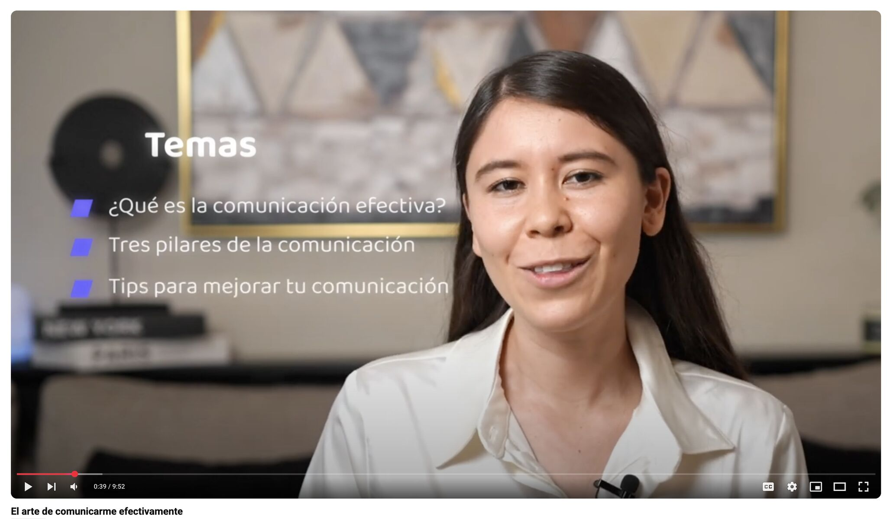

Course Creator · 2025
Public Speaking Course for Academia Juventudes
I created a public speaking course for Academia Juventudes del Estado de Guanajuato, sharing practical tips to help young people improve their communication, structure their ideas, and speak with more clarity and confidence.